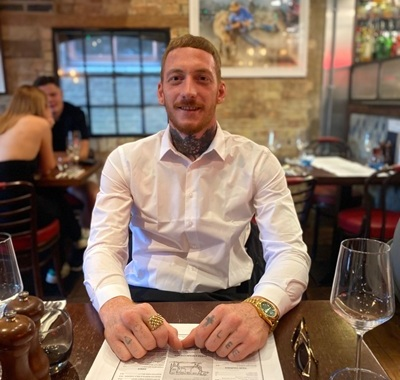

Empower Your Inner Dreamer – Overcome Trauma, Smash Limits, Thrive Forever
Hi, I'm Luke, founder of Luke's Life Coaching in Cambridge, UK—a survivor who's risen from the depths of ADHD, grief from losing my dad young, bullying, addiction, and feeling utterly lost and alone. I believe there's no such thing as bad people or failure, only good souls shaped by trauma and misguided beliefs; everyone is uniquely amazing, a dreamer capable of anything with growth and grit. After hitting rock bottom and reclaiming my life through gym motivation, skill-building, and finding faith, I now guide others to silence the inner noise, heal wounds, build unshakeable confidence, embrace solitude with joy, and smash big dreams. Through personalized 1-to-1 coaching sessions and empowering 1-to-many group programs, we'll turn your obstacles into triumphs—let's grow together and thrive!
(No pressure—just a friendly conversation to see how I can support you.)